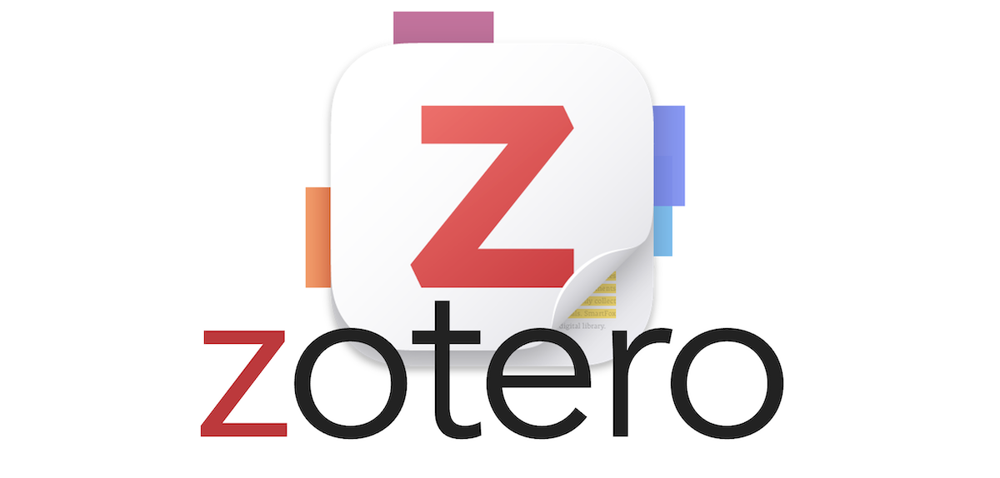
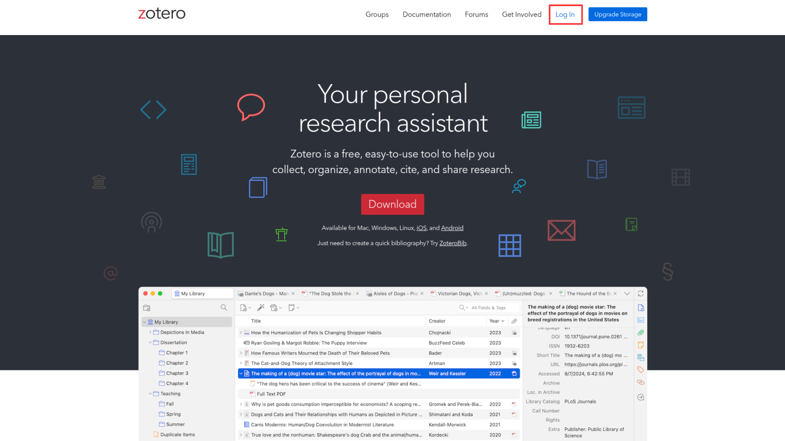
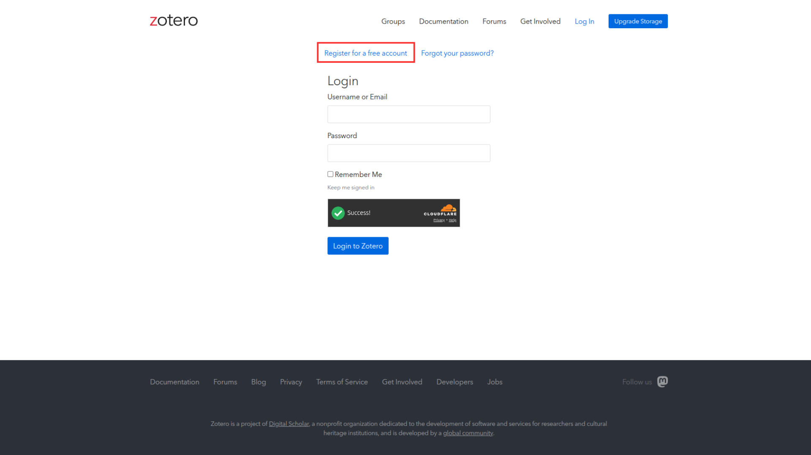
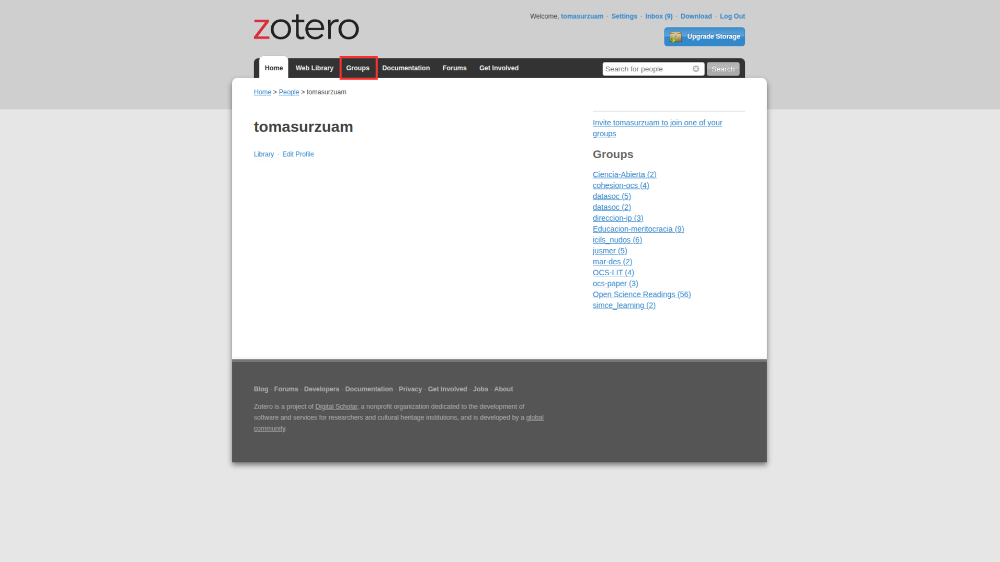
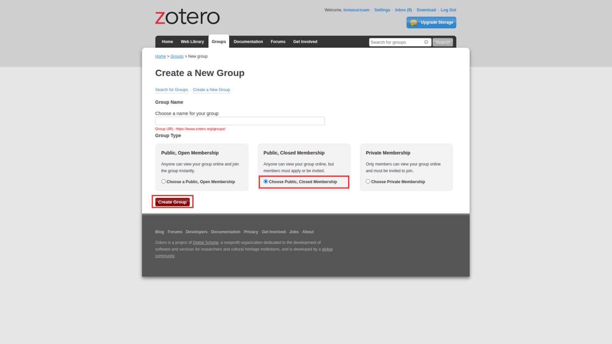
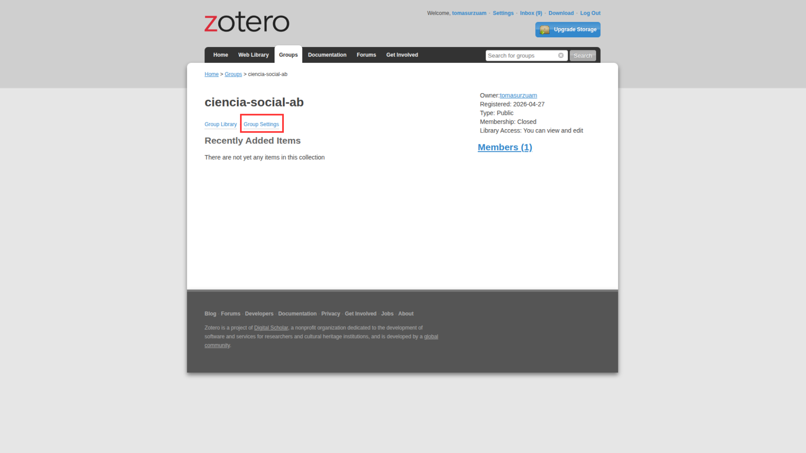

Creación de bibliotecas colaborativas en Zotero

Zotero es un gestor de referencias bibliográficas con el que podemos organizar nuestro material y además exportarlo para poder citar en texto plano a partir de las citation keys.
Revisitar práctico de Zotero: aquí
Además de la organización de referencias y posibilidades de citación, Zotero también facilita el trabajar colaborativamente. Para esto veremos cómo sincronizar nuestro Zotero local con la nube y luego cómo crear bibliotecas compartidas.
1 Sincronización
1.1 Web
Primero, debemos entrar a zotero.org y clickear en “Log in” en la esquina superior derecha.

Si ya tenemos una cuenta en Zotero, escribimos nuestros datos e ingresamos. Si no tenemos una cuenta, clickeamos en el apartado que señala el cuadro rojo en la imagen para crear una cuenta, y luego ingresamos.

1.2 Local
Dentro de su aplicación Zotero de escritorio, en el menú superior deben ir a “Edit” -> “Settings” -> “Sync” y ahí ingresar su cuenta. Una vez hecho esto, la aplicación de escritorio sincronizará automáticamente sus bibliotecas. Si esto no ocurre, pueden forzar la sincronización apretando en la esquina superior derecha de su aplicación.
1.3 Comprobar
Para comprobar si la sincronización se realizó correctamente, pueden ir a su cuenta en la página web de Zotero e ingresar a la sección Web Library. Si tienen las mismas bibliotecas que en su aplicación de escritorio, significa que están sincronizadas.
2 Bibliotecas grupales
En Zotero existen dos tipos de bibliotecas: las bibliotecas individuales (que hemos usado hasta ahora) y las bibliotecas grupales. Estas últimas nos permiten organizar las referencias de manera colaborativa sin la necesidad de estar enviando y reenviando bibliografía por correo u otros medios.
2.1 Web
¿Cómo crear bibliotecas grupales?
Una vez con nuestra cuenta en la página web, debemos ir a “Groups” y seleccionamos “Create a New Group”.

Luego, eligen el nombre de su grupo y el tipo: este puede ser completamente público, público-cerrado o privado (recomendamos elegir la opción público-cerrado). Después de haberle dado un nombre y elegido el tipo de apertura, clickean en “Create Group”.

Ya han creado su biblioteca compartida en Zotero. Para que esta carpeta se visualice en su aplicación de escritorio, deben abrir la app e ingresar su cuenta.
Ahora sólo falta invitar a las personas con quienes utilizarán este espacio. En la página web de Zotero deben ingresar en la biblioteca ya creada, clickear “Group Settings” -> “Members Settings” -> “Send more invitations” y escribir el email o el username de quienes quieran añadir.

Una vez la persona acepte la invitación, después de sincronizar su nube con la app de escritorio, aparecerá la biblioteca grupal en su Zotero local y podrán organizar sus referencias en conjunto.
Para que la biblioteca compartida funcione correctamente, se deben tomar tres precauciones:
Cada miembro del proyecto debe sincronizar la biblioteca grupal con el archivo .bib local (exportando con Betterbibtex como se explica en el Práctico 2.
Mantener solo el .bib de la biblioteca grupal en el proyecto, para evitar confusiones con otros archivos .bib que puedan tener en sus bibliotecas individuales.
Cada miembro del proyecto debe asegurarse de tener la misma fórmula de citation key en Better BibTeX para evitar conflictos en la citación en texto plano. Para esto, deben ir a “Edit” -> “Settings” -> “Export” y elegir la misma fórmula de citation key, se recomienda la siguiente:
auth.lower + "_" + title.select(1,1).lower + "_" + year
2.2 Local
Zotero debería actualizarse automáticamente al haber añadido una biblioteca compartida. En caso que no se haya actualizado, pueden clickear en la esquina superior derecha de su aplicación. En la biblioteca deberían encontrar todas las referencias que han añadido l_s integrantes de su grupo.
2.3 Comprobar
Pueden comprobar que la biblioteca funciona correctamente si tienen las mismas referencias guardadas que l_s demás integrantes de su grupo.